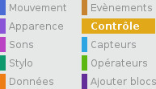

Scratch : initiation à l'algorithmique
TP3 : Les conditons
Tirs croisés
Nous avons un vaisseau que le joueur dirige, une soucoupe à affronter... Il est temps de permettre à tout ce beau monde de s'étriper.
Exercice 1
Soyons prudent et commençons par armer notre vaisseau.
- Téléchargez l'image suivante et enregistrez-la dans le répertoire Images_Asteroides :
- Allez sur la page web de Scratch
- Ouvrez le fichier TP2_exo3 : Fichier -> importer depuis l'ordinateur
- En bas de la zone d'affichage, cliquez sur le bouton suivant :
- Sélectionnez l'image que vous venez d'enregistrer
- Le projectile est beaucoup trop gros : commencez par réduire sa taille de 50%, lorsque l'utilisateur clique sur le drapeau vert
- Sauvegardez votre travail dans le répertoire TP_Asteroides, dans un fichier nommé asteroides_TP3_exo1".
- Réduisez la taille du projectile de 50%, lorsque l'utilisateur clique sur le drapeau vert.
Nous voulons que la balle reste invisible jusqu'à ce que l'utilisateur appuie sur la barre espace. A ce moment, la balle doit aller au niveau du vaisseau, devenir visible et commencer à se déplacer... Les blocs permettant de cacher et montrer le projectile, se situent dans le menue Apparence.
- Ecrivez le programme qui cache la balle, lorsque l'utilisateur clique sur la drapeau vert.
- Ajoutez les instructions pour rendre la balle visible, quand l'utilisateur appuie sur la barre espace
- Sauvegardez votre travail dans le répertoire TP_Asteroides, dans un fichier nommé asteroides_TP3_exo1".
Nous allons maintenant utiliser un bloc de mouvement très utile : Ce bloc permet de déplacer un objet vers le pointeur de la souris ou un autre objet. Utilisez son menu déroulant pour sélectionner le vaisseau, à la place du pointeur de la souris.
- Ajoutez les blocs pour que lorsque le joueur appuie sur la barre espace :
- le projectile se déplace jusqu'au vaisseau
- le projectile devienne visible
- le projectile s'oriente vers le haut
- le projectile avance indéfiniment (pensez à réutiliser la boucle du tp2)
- Sauvegardez votre travail dans le répertoire TP_Asteroides, dans un fichier nommé asteroides_TP3_exo1".
Exercice 2
Bon c'est mieux, mais ce projectile qui reste coincé dans le bord de l'écran, ce n'est pas très joli... Ce qu'il faudrait c'est pouvoir cacher à nouveau le projectile, lorsqu'il atteind le bord de l'écran. Et puis on voudrait pouvoir tirer plusieurs fois. Pour le moment, nous n'avons qu'une unique chance de toucher la soucoupe volante.
Nos problèmes sont liés à l'utilisation de la boucle Répéter indéfiniment.
En fait ce que nous aimerions, c'est une boucle qui s'arrête lorsque le projectile
touche le bord de l'écran. Et c'est justement ce que nous permet le bloc
de contrôle répéter jusqu'à.
Comme vous le voyez, ce bloc dispose d'un espace vide en forme, d'hexagone :
Cet hexagone correspond à une condition, c'est-à-dire un évènement, qui
induira la fin de la boucle. Dans notre cas, la condition est que le
projectile touche les bords.
Comment notre projectile peut-il savoir qu'il touche un bord ? Exactement
comme un robot : à l'aide de capteur. Si vous jettez un oeil dans le menu
Capteur, vous allez trouver cet hexagone bleu :
Le menu déroulant permet, entre autre, de sélectionner bord :
En associant ces deux blocs, vous allez obtenir la boucle suivante :
Utilisez-la à la place de la boucle répéter indéfiniement.
Si vous testez votre programme, vous ne constaterez aucun changement. C'est
normal : pour faire disparaître la balle, il nous faut la cacher, une fois
que la boucle est finie. Au final, pour contrôler notre projectile
nous obtenons le programme suivant :
- Recopiez ce programme
- Testez-le
- Que se passe-t-il si vous appuyez sur la touche espace avant que le projectile n'ait disparu ?
- Sauvegardez votre travail dans le répertoire TP_Asteroides, dans un fichier nommé asteroides_TP3_exo2".
Exercice 3
Il nous reste à modifier le comportement de la soucoupe volante pour qu'elle disparaisse lorsqu'elle touche le projectile. C'est très simple : là aussi, il suffit de remplacer la boucle répéter indéfiniment par une boucle jusqu'à et de cacher la soucoupe volante, une fois que cette boucle est terminée.... Oui, c'est exactement la même chose que dans l'exercice 2 !
- Sélectionnez la soucoupe volante pour pouvoir modifier son programme
- Remplacez la boucle infinie, par une boucle Jusqu'à projectile touché
- Cachez la soucoupe à la fin de la boucle
- Lorsque le programme se terminera, la soucoupe sera cachée. Il faut donc ajouter le bloc permettant de la montrer, au tout début du programme, avant de modifier sa taille : ajoutez le bloc montrer. Si vous n'ajoutez pas ce bloc, votre soucoupe restera invisible lorsque vous relancerez votre programme.
- Testez votre programme
- Sauvegardez votre travail dans le répertoire TP_Asteroides, dans un fichier nommé asteroides_TP3_exo3".
Malheureusement, il y a un bug dans notre programme et il en plus il n'est pas facile à trouver. En fait, lorsque le projectile est caché, il est simplement invisible : la soucoupe volante peut toujours le percuter et mourir, alors que le joueur n'a pas tiré. Aussi, avant de cacher le projectile, nous allons le mettre très loin en dehors de la zone d'affichage,par exemple au point de coordonnées (1000,1000).
- Sélectionnez le projectile, pour modifier son programme
- Ajoutez aux bons endroits, le bloc permettant de placer le projectile à un endroit spécifique (indice : c'est un bloc de mouvement)
- Testez votre programme
- Sauvegardez votre travail dans le répertoire TP_Asteroides, dans un fichier nommé asteroides_TP3_exo3.
Blocs à utiliser
Menu évènements
Dans l'onglet Scripts, sélectionnez la catégorie évènements.
 : première instruction pour démarrer le programme
lorsque l'utilisateur clique sur le drapeau vert
: première instruction pour démarrer le programme
lorsque l'utilisateur clique sur le drapeau vert- : exécute un programme lorsqu'une touche est pressée par l'utilisateur
Menu mouvement
Dans l'onglet Scripts, sélectionnez la catégorie mouvement.
- : positionne le vaisseau
- : fais avancer le vaisseau
- : positionne le vaisseau dans une direction spécifique(droite, gauche, haut,bas)
- : tourne le vaisseau dans le sens des aiguilles d'une montre
- : tourne le vaisseau dans le sens inverse des aiguilles d'une montre
- : va vers un objet spécifique
Menu contrôle
Dans l'onglet Scripts, sélectionnez la catégorie contrôle.
 : répète une liste d'actions, sans s'arrêter
: répète une liste d'actions, sans s'arrêter- : répète une liste d'actions, jusqu'à ce qu'une condition soit satisfaite
Menu apparence
Dans l'onglet Scripts, sélectionnez la catégorie apparence.

- : donne la taille d'un objet
- : cache un objet
- : montre un objet caché
Menu capteurs
Dans l'onglet Scripts, sélectionnez la catégorie capteurs.
- : signale si le personnage a atteint les bords de l'image